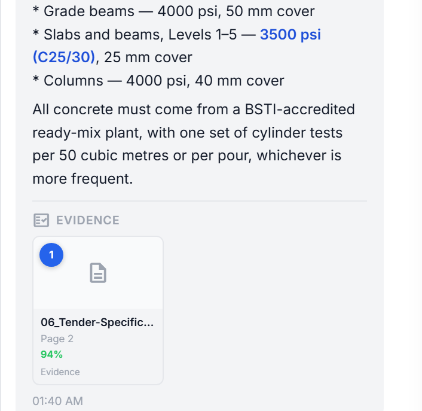
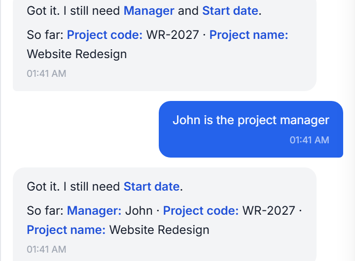
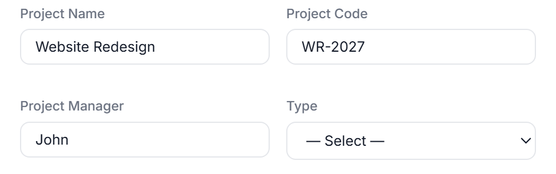

Bangladesh University of Engineering & Technology · Dept. of CSE · Level-4 Capstone 2026
Construction document intelligence that refuses to guess. Every answer points at the page it came from; every field it cannot read, it asks for.
A construction contract is a legal document. Slabs are specified at 3500 psi and piles at 4000 psi — an assistant that confuses the two has not made a typo, it has created a liability.
Site engineers still answer such questions by hand-searching hundreds of pages of specifications and drawings. A general-purpose assistant answers fluently and wrongly, with nothing to check it against — and will invent a project, a date or a person to finish filling a form.
GUARANTEE 01 — READING
Retrieval runs over rendered page images, not extracted text. A ColPali v1.2 vision–language encoder embeds each page as a grid of patch vectors and MaxSim scores the question against them — so a table, a stamped revision or a floor plan is searchable on the same footing as a paragraph.
The answer alongside is checkable in one click: 06_Tender-Specification.pdf, page 2, 94% MaxSim — the page that actually carries the concrete schedule.

A live answer and its evidence card — grades differ by location.
GUARANTEE 02 — WRITING
Chat creates eleven kinds of record — projects, tasks, users, roles, costs, procurement, catalogues. What each one mandates is derived from the application's own constructors and validators, so the assistant and the API can never disagree about what is required.
Interpretation creates nothing. 529 tests / 591 cases hold the line — including that an unreadable date is asked for again rather than filled in.

Mid-collection: each reply names only what is still missing.

Then the dialog opens once, prefilled, for review.
How it works — two paths, one guarantee each
The rest of the platform
Built and tested
591
test cases passing,
from 529 test functions
112
API routes across
23 backend modules
11
record types creatable
from a sentence
26k
lines of Python
and JavaScript
0
invented references
accepted, by design
1
consumer GPU —
runs fully on-premises